Certificates
The Certificates task allows you to manage root certificates.
1 | Task selector | 2 | Default |
3 | Web certificates | 4 | BACnet/SC certificates |
5 | IEEE 802.1X certificates | 6 | Signing activities |
Icons | Description |
|---|---|
|
| Project root certificate. |
| ABT Site acts as a certificate authority. |
Device with a valid root certificate. | |
Shows a temporary certificate during the root certificate update process. An additional 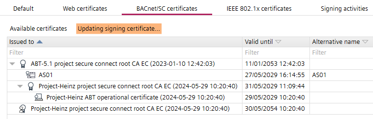 | |
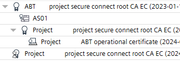 | Shows the hierarchical use of external CA with an ABT Site root certificate.
|
| Device certificate with unknown trust chain message displays. Additional information are highlighted to the issue. 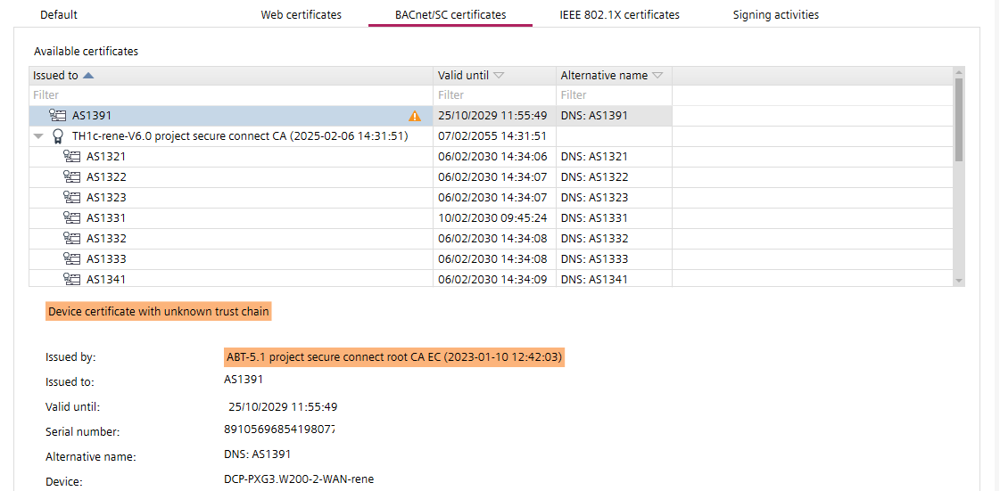 |


① Task selector
Task | Description |
|---|---|
Information | |
Address defaults | |
Device defaults | |
User profiles | |
Naming defaults | |
Localization | |
I/O assignment templates | |
Number ranges | |
Certificates |
② Default
Task | Description |
|---|---|
|
Certificate issuer | Organization name: Specify the name of the organization who will issue the certificate. Organization department: Specify the name of the organizational department who will issue the certificate. Location: Specify the location of the organization. State: Specify the state of the organization. Country: Specify the country code of the organization according to the ISO 3166-1 standard.
Not allowed, for example:
Email address: Specify the email address of the organization. |
Web server certificates | Certificate type: None, internal or external certificate. External key type: Select one of the key lengths for the TLS certificate: The selected length of the key depends on the existing IT infrastructure or the customer's security requirements. Clarify with the customer which key length is to be used. If a setting is changed in ABT Site at later time, all CSRs certificates must be recreated. A corresponding value must be entered, for example, in the RADIUS server. For more information, see chapter Editing the properties of the new template in the Document A6V16172313. Certificate validity: Specifies for how long the certificate is going to be valid (in months).
Expiration warning period: Set the time between expiry and the controller producing a notification to the user (in days).
|
BACnet/SC certificates | Certificate type: None, internal or external certificate. External key type: Select one of the key lengths for the TLS certificate: The selected length of the key depends on the existing IT infrastructure or the customer's security requirements. Clarify with the customer which key length is to be used. If a setting is changed in ABT Site at later time, all CSRs certificates must be recreated. A corresponding value must be entered, for example, in the RADIUS server. For more information, see chapter Editing the properties of the new template in the Document A6V16172313. Certificate validity: Specifies for how long the certificate is going to be valid (in months).
Expiration warning period: Set the time between expiry and the controller producing a notification to the user (in days).
|
IEEE 802.1X certificates | Certificate type: None, internal or external certificate. External key type: Select one of the key lengths for the TLS certificate: The selected length of the key depends on the existing IT infrastructure or the customer's security requirements. Clarify with the customer which key length is to be used. If a setting is changed in ABT Site at later time, all CSRs certificates must be recreated. See also: A corresponding value must be entered, for example, in the RADIUS server. For more information, see chapter Editing the properties of the new template in the document A6V16172313. Certificate validity: Specifies for how long the certificate is going to be valid (in months).
Expiration warning period: Set the time between expiry and the controller producing a notification to the user (in days).
Identity: Describes the identity of the device, this depends on the requirements of the used RADIUS server or authentication service, for example, with Windows RADIUS (Network Policy Server) and Windows Active Directory, a user name like an email is required. The identity can be composed by a prefix, device identity and postfix:
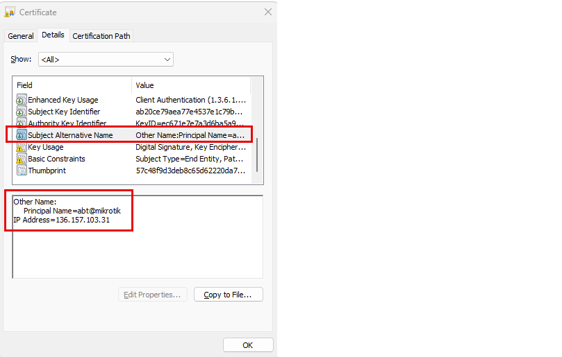
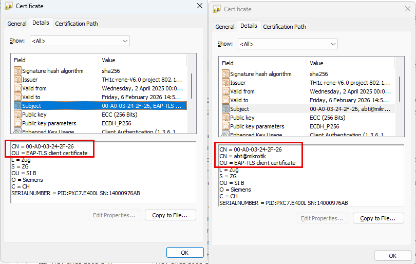 Example without device identity: 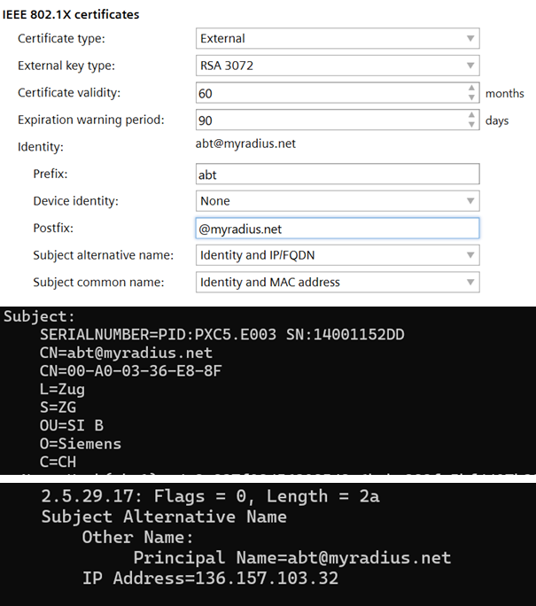 Example with device identity: 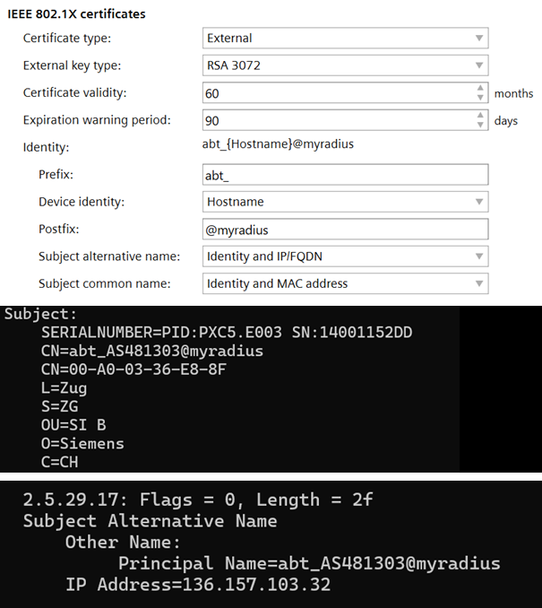 For instructions on how to install and configure the RADIUS server, see the document dot1x port-based authentication with EAP-TLS method. |
③ Web certificates
Web certificates shows the following certificate types:
- ABT Site main signed certificate
- Intermediate signed certificate
- Device certificate
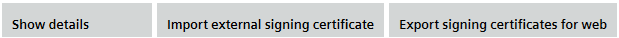
Toolbar | Description |
|---|---|
|
Show details | Opens the Certificate dialog box from Windows. |
Import external signing certificate | Imports 3rd party root certificates into the project. |
Export signing certificates for web | Exports the ABT Site root certificate (the certificate of the certification authority), in order to install the root certificate to a client, for example, Web browser. |
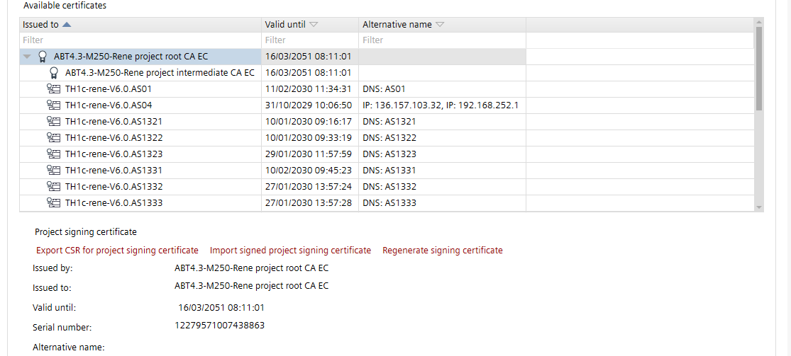
Details view | Description |
|---|---|
Actions | |
|
Export CSR for ABT signing certificate | Creates a root certificate for an external intermediate signing request. This file must be sent to a trustworthy authority, a certification authority that issues digital certificates. |
Import signed ABT signing certificate | Imports the external intermediate signed root certificate from an external trusted certificate authority. |
Regenerate signing certificate | You can regenerate the internal root certificate. The device certificates for the regenerated root certificate need to be regenerated also. Therefore, a download for each device must be carried out. Only enabled with Administrator rights. |
Delete imported signing certificate | Deletes the selected root certificate. |
Information | |
Issued by | Name of the certificate authority who has signed the certificate. |
Issued to | The entity receiving the certificate. |
Valid until | Expiration date of the certificate. |
Serial number | Contains information for the identification of the device such as the serial number. |
Alternative names | Alternative name of the subject. |
④ BACnet/SC certificates
BACnet/SC certificates shows the following certificate types:
- ABT Site main signed certificate
- Intermediate signed certificate
- Temporary signing certificate
- Device certificate
- ABT Site operational certificate
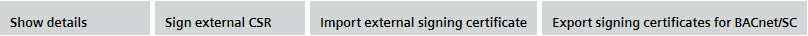
Toolbar | Description |
|---|---|
|
Show details | Opens the Certificate dialog box from Windows. |
Sign external CSR | Use this button to sign CSRs from 3rd party devices. |
Import external signing certificate | Imports 3rd party root certificates into the project. |
Export signing certificates for BACnet/SC | Exports the ABT Site root certificate (the certificate of the certification authority), in order to install the root certificate to a client. |
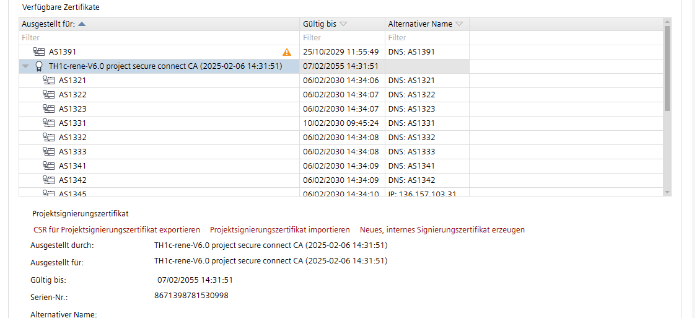
Details view | Description |
|---|---|
Actions | |
|
Export CSR for ABT signing certificate | Creates a root certificate for an external intermediate signing request. This file must be sent to a trustworthy authority, a certification authority that issues digital certificates. |
Import signed ABT signing certificate | Imports the external intermediate signed root certificate from an external trusted certificate authority. |
Generate new internal signing certificate | You can regenerate the internal root certificate. The device certificates for the regenerated root certificate need to be regenerated also. Therefore, a download must be carried out. Only enabled with Administrator rights. |
Export CSR for ABT operational certificate | Exports the signing request for the operational certificate. This removes the existing operational certificate keys from the project data and invalidates previous signing request. Note: This operation cannot be undone and the ABT Site is no longer a trusted device as long the new signing request is imported. |
Import signed ABT operational certificate | Imports the external signed root certificate from an external trusted certificate authority. |
Delete temporary root | Deletes the temporary root certificate. If all devices are updated with the new Main signed certificate, the Temporary signing certificate can be deleted. When deleted, a new ABT operational certificate is created at the same time. If an external certification authority has previously been used, this process must be repeated. |
Delete imported signing certificate | Deletes the selected root certificate. |
Information | |
Issued by | Name of the certificate authority who has signed the certificate. |
Issued to | The entity receiving the certificate. |
Valid until | Expiration date of the certificate. |
Serial number | Contains information for the identification of the device such as the serial number. |
Alternative names | Alternative name of the subject. |
⑤ IEEE 802.1X certificates
IEEE 802.1X certificates shows the following certificate types:
- ABT Site main signed certificate
- Intermediate signed certificate
- Device certificate
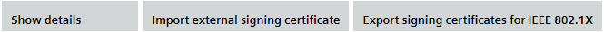
Toolbar | Description |
|---|---|
|
Show details | Opens the Certificate dialog box from Windows. |
Import external signing certificate | Imports 3rd party root certificates into the project. |
Export signing certificates for IEEE 802.1X | Exports the ABT Site root certificate (the certificate of the certification authority), in order to install the root certificate to a client. |
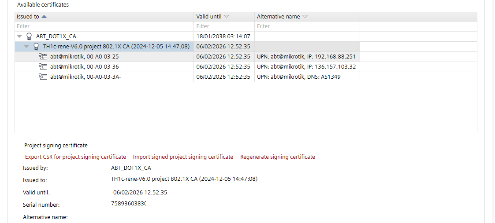
Details view | Description |
|---|---|
Actions | |
|
Regenerate signing certificate | You can regenerate the internal root certificate. The device certificates for the regenerated root certificate need to be regenerated also. Therefore, a download must be carried out. Only enabled with Administrator rights. |
Export CSR for ABT signing certificate | Creates a root certificate for an external intermediate signing request. This file must be sent to a trustworthy authority, a certification authority that issues digital certificates. |
Import signed ABT signing certificate | Imports the external intermediate signed root certificate from an external trusted certificate authority. |
Export CSR for ABT operational certificate |
|
Delete imported signing certificate | Deletes the selected root certificate. |
Information | |
Issued by | Name of the certificate authority who has signed the certificate. |
Issued to | The entity receiving the certificate. |
Valid until | Expiration date of the certificate. |
Serial number | Contains information for the identification of the device such as the serial number. |
Alternative names | Alternative name of the subject. |
⑥ Signing activities
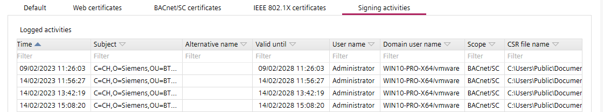
Column | Description |
|---|---|
|
Time | Time stamp of the activity. |
Subject | Subject of the activity. Contains information for the identification of the device such as the serial number. |
Alternative name | Alternative name of the subject. |
Valid until | Expiration date of the certificate. |
User name | Name of the user who performed the signing activity. |
Domain user name | The domain user name. |
Scope | The scope of the signing activity. |
CSR file name | Name of the CSR file. |